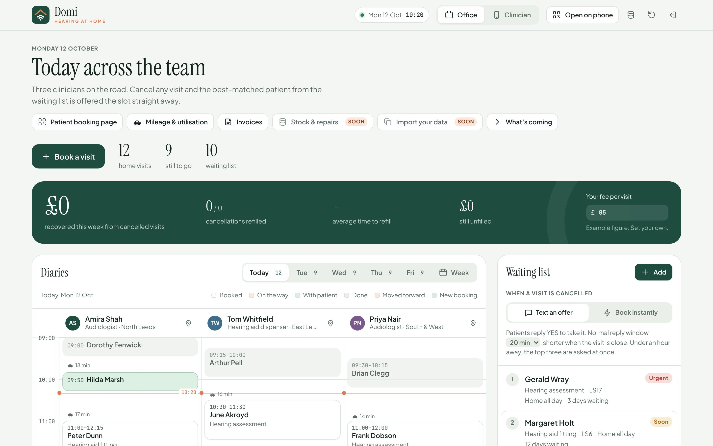

For home-visit hearing practices
Cancellations that fill themselves.
When a patient cancels, Domi texts the best-matched person on your waiting list, books the first one who says yes, and updates the clinician's phone. Nobody in the office has to pick up the phone.
The demo uses invented patients in Leeds. If nobody has opened it for a while, it takes about a minute to wake up.
